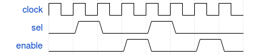
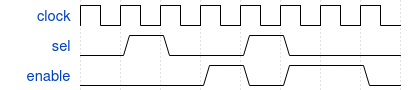
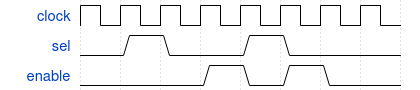
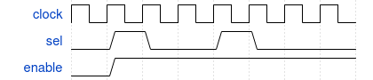

Next to defining immediate assertions and concurrent assertions, it is also very valuable if certain sequences can be evaluated. For example, if a condition A is true at a certain moment time, we want to assert that the next clockcycle condition B holds. This type of succession can be described using sequences.
Sequences can be declared in modules, programs, interfaces, … and can be used in assertions. The example below shows a sequence that:
sequence seq1;
@(posedge clock) sel ##2 enable;
endsequence




It is pointed out that the number that follows the ## is not interpreted as units of time (e.g. 2 ns), but in timescale sampling points (e.g. `timescale <time_unit>/<time_prescision>). The delay-symbol ## can also be used as an interval, e.g. ##[1:5]; possibly with an open ending, e.g. ##[1:$] (where $ symbolises forever).
As the subtitle indicates, sequences can be used in other sequences.
sequence seq1;
@(posedge clock) sel ##2 enable;
endsequence
sequence seq2;
@(posedge clock) clear ##1 seq1 ##1 sel;
endsequence
There are a number of ways on which different (parallel) sequences can be combined.
sequence seq1;
@(posedge clock) a ##2 b;
endsequence
sequence seq2;
@(posedge clock) c ##1 d ##1 e;
endsequence
Sequences can be merged into assertions through properties. The idea is that you can define a property. This could require some code. This property is then used in the assertion to verify.
sel ##2 enable
sel ##2 enable
sequence my_fantastic_sequence;
@(posedge clock) sel ##2 enable;
endsequence
property my_fantastic_property;
my_fantastic_sequence;
endproperty
a_bold_assertion_name_goes_here: assert property(my_fantastic_property);